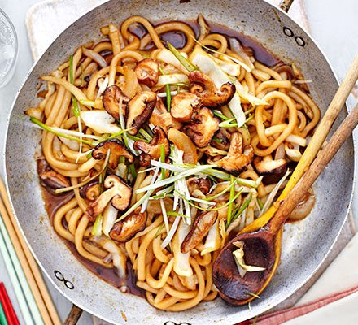
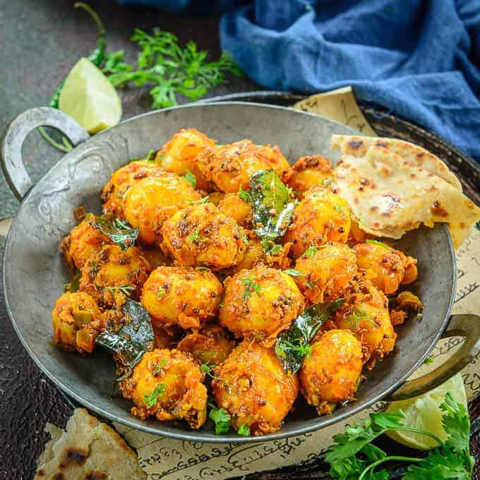
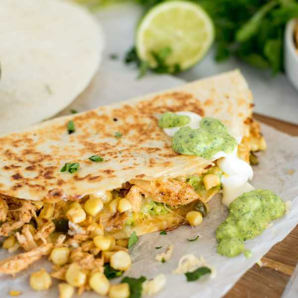
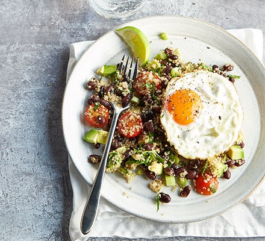

Udon Noodles

Ingredients
- 400 g udon noodles
- 200 g tofu and/or seitan
- 150 g brown mushrooms
- 1 red bell pepper
- 1 carrot
- 150 g broccoli
- 1 garlic clove
- about 2 cm ginger
- 3 tbsp sesame oil
- 2 tsp sesame seeds
- 5 tbsp soy sauce
- 3 tbsp mushroom sauce
- 1 tsp sriracha hot sauce
- 1 tbsp rice vinegar
- 1/2 tsp five spice powder
- 1 tbsp sugar
- 300 ml water
Procedure
- Cut and peel the carrot into bite size slices. empty the core of the bell pepper and cut that too into pieces. Do the same with the broccoli and mushrooms after cleaning them.
- Peel and finely dice the ginger and garlic. Add this and all the vegetables into a pan with the sesame oil.
- Boil your udon noodles and add them to the pan.
- Serve hot and do not forget to sprinkle some sesame seeds.
Vegetable Fried Rice

Ingredients
- 2 cloves garlic,
- 1 tsp ginger
- 1 carrot
- 1 red bell pepper
- <4 green onion/li>
- 2 large eggs
- 1 cup frozen peas
- 3 Tbsp cooking oil
- 3 cups cooked and cooled rice
- 3 Tbsp soy sauce
- 1 Tbsp toasted sesame oil
Procedure
- Prepare the vegetables by washing them first. Then peel and finely slice the ginger and garlic. Chop the vegetables into equal bite size pieces.
- In a separate bowl whisk some eggs. Heat the pan along with some cooking oil and after it heats up, add the eggs.
- Add your vegetables and make sure the peas are not frozen anymore.
- Add your rice (day old rice is preferred) to the pan and sauté with the soy sauce.
- Serve hot and sprinkle some sliced green onions
Bombay Aloo

Ingredients
- 1 tbsp vegetable oil
- 1 tsp mustard seeds
- 5 curry leaves
- 1 onion, sliced
- 2 green chillies, finely chopped
- 1 tsp cumin seeds
- 1 tsp coriander seeds
- ½ tsp red chilli powder (optional)
- ½ tsp turmeric
- 1 tsp salt
- 2 potatoes, cut into chunks
- 1 tsp garam masala
- Handful fresh coriander, finely chopped
Procedure
- Bring a pan into high heat with some oil. Then add some mustard seeds and curry leaves.
- Once the mustard seeds start to splutter, you can add the onions and wait for them to turn golden brown.
- Using a pestle and mortar, grind the cumin and coriander seeds. Add this powder, turmeric powder, green chilies, and chili powder to the pan.
- After the spices become fragrant, add the salt and potatoes to the pan and cook for 5 minutes.
- Add a splash of water, close the lid and let it cook for 15 minutes.
- Add to a separate bowl and present with chopped coriander and a sprinkle of garam masala.
Chicken Pakora

Ingredients
- 5 chicken thigh fillets, trimmed & chopped into bite-sized pieces
- 2 cloves garlic
- 3cm piece fresh ginger, chopped roughly
- 2 green chillies, chopped
- Juice from ½ lemon
- 1 tsp salt
- 2 tsp garam masala
- 1 tsp cumin seeds (crushed)
- 1 tsp red chilli powder
- 2 tsp dried fenugreek leaves (kasoori methi)
- 100g gram flour
- Handful of coriander, chopped
- Water (if required)
- Rapeseed oil for deep frying
Procedure
- Using a pestle and mortar grind the garlic, ginger, green chillies, lemon juice, garam masala, cumin seeds, chilli powder and dried fenugreek seeds.
- Marinate the chicken with the paste we just made.
- Heat up the pot with oil and bring in to a medium heat.
- Mix the meat mixture with chopped coriander and gram flour.
- Add some water if the batter is too thick.
- Slowly place hockey pucks sized pieces into the pot and fry till golden brown.
- Place on a paper towel after frying and serve hot.
Corn Quesadillas

Ingredients
- 1-1/2 cups shredded Monterey Jack or pepper jack cheese
- 1 cup fresh or frozen corn
- 3 green onions, thinly sliced
- 1/4 cup chopped fresh cilantro
- 2 tablespoons sour cream
- 1 tablespoon minced chipotle peppers in adobo sauce
- 4 flour tortillas (8 inches)
- 1 teaspoon canola oil
- Guacamole
Procedure
- Place the cheese, corn, green onions, cilantro, sour cream and chipotle peppers into a mixing bowl and mix
- Heat up some tortillas with some oil.
- After the tortillas start browning up a little, add your mixture.
- After half the cheese is melted, place another tortilla on top and flip.
- When both the sides are golden brown, take it out of the pan and cut into slices.
- Serve with guacamole.
South American-style quinoa with fried eggs

Ingredients
- 75g quinoa
- 400g can black beans, drained
- ½ tsp ground cumin
- ½ tsp ground coriander
- 1 lime, zested and juiced, plus extra wedges to serve
- 1 tsp cider vinegar
- 160g cherry tomatoes, halved
- 1 small avocado, stoned, peeled and roughly chopped
- 2 tbsp finely chopped coriander
- 3 spring onions or ½ small red onion, finely chopped
- rapeseed oil, for frying
- 2 medium eggs
Procedure
- Place the quinoa in a pan with some water and bring it to a boil. After it starts boiling, let it simmer for 15 minutes and stir occasionally. Drain the water after this.
- Mix the quinoa with the beans, spices, lime zest, lime juice, vinegar, tomatoes, avocado, cilantro and onions.
- Fry and egg on a separate pan with some oil until the edges turn crispy.
- Serve the quinoa below the fried eggs.